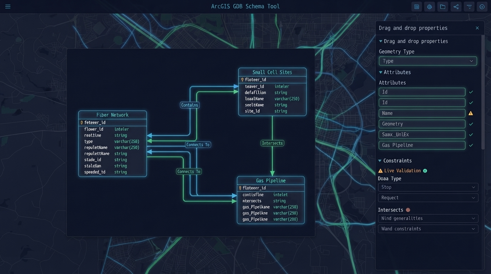

Import widely
Accepts JSON, XLSX, XML Workspace, GeoPackage, and zipped geodatabases.
GIS · Geodatabase · Schema
A browser-based schema workspace that lets teams inspect, edit, validate, and export ArcGIS geodatabase definitions without ArcGIS Pro.

Geodatabase schemas are hard to review, edit, and share without desktop GIS software. That slows handoffs and keeps nontechnical collaborators out of the process.
The solutionA client-side editor makes the schema portable, validates changes in the browser, and connects to a matching ArcGIS Pro toolbox only for the final binary build.
Capabilities
Accepts JSON, XLSX, XML Workspace, GeoPackage, and zipped geodatabases.
Reviews feature classes, fields, domains, subtypes, and nullability with live validation.
Starts with Fiber, Small Cell, Gas Line, or Field Inspection network models.
Pairs browser JSON with an ArcPy toolbox for geodatabase creation and export.
Screenshots
Screenshots are not currently available for this project.